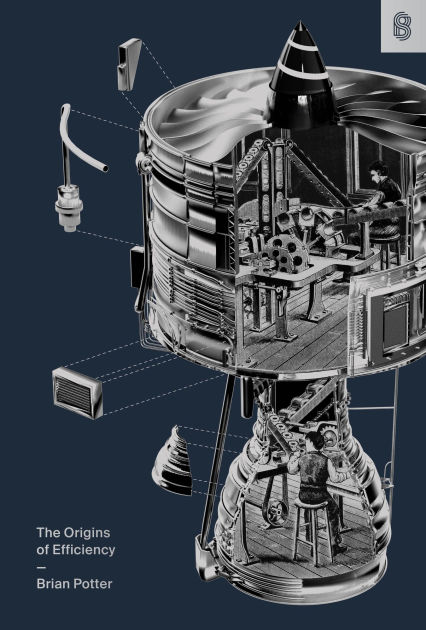

Book Review: The Origins of Efficiency
9 February 2026

Another review, and I quite enjoyed this one! It almost went too fast. But first, some life updates. I've been going to Jailhouse (a climbing crag) on the weekends a lot recently, and it's kind of been chewing me up. I was actually supposed to go for a run today (the 4th, but this review will release on the 5th); but have just been feeling kind of beat from the climbing. I set 10 personal goals this year; it's really sunken in that I need to make 3% progress on one goal every day. For some, which are accomplished in discrete events, that's manageable; but for others, I need to make consistent progress. For example, my running goal was 200 hours and completing a 100k race (Dick Collins); so one hour of running nets me...0.25% of the goal. Oof... I'm mentioning this because one of my two reading goals is to read all the Stripe Press books and write a review for each, and I am stitting at ~13.5/19 done with 4/19 reviews completed. About halfway. But it being February and all, I was supposed to finish a goal by now.
Back to the book. This book is in the "how to do things" category from Stripe Press (it was commissioned by them, not a reprint of an old classic), and features a more "Progress Studies"-adjacent author in Brian Potter, who is currently a fellow at the Institute For Progress, a DC think tank. It describes the elements of a production process, ways to improve each element (make production more efficient), common frameworks to accomplish the different ways, patterns that have emerged, and finally, why some things fail to become more efficient. In other words, remember the show How It's Made? It's that.
The book very much feels like a textbook for an intro course that's missing some equations and practice problems, Factory Efficiency 101 or something like that. I mean that as words of praise, I was engrossed the whole time! In fact, I wish it was a bit longer and had some of those elements, but I understand Stripe is trying to turn a profit here, which means once Brian hits that magical 300 page mark, you know the book is almost over. Each chapter described ways steps in a process are removed, product parts are combined, step variation is reduced, scale achieved, costs reduced with learning, buffers eliminated, and so on. Three examples it repeatedly comes back to are nail production, glass bulb production, and Ford's Model T (so much so that I wish there were some visual aids a la How It's Made, but Brian does a serviceable job with his descriptions). Moore's Law-like gains in efficiency seem to lie around every corner: 50x productive machines, 90% reductions in cost, 50% reduction in time taken, and so on. As I read on, I really soaked in just how tremendous and hard-fought the last 200 years of productivity improvements and technological progress have been. The various chapters contain some of the most important processes in modern life: iron production, steel production, cars, penecillin, books. The opening chapter focuses on the past, describing the absolute destitution, literally a handful of posessions and wearing clothes that took hundreds of hours of labor, that people in the past lived in. The closing chapter, in turn, paints an optimistic picture of productivity gains using near-future tech like AI-powered simulations, self-driving vehicles, and humanoid robots, in one of the last inefficient domains, housing.
Some weaker parts are the summary sections at the end of each chapter, which occasionally read like an impact section or simply obligatory rather than a part-by-part summary, and the aforementioned lack of diagrams. This book, more than others, felt adaptable to a video series or movie.
Here's the summary.
- Introduction: defining production efficiency; penicillin example from discovery to mass production; economic growth partly comes new tech and more capital, but also more effiency.
- Chapter 1: What a production process is. (inputs, steps, outputs; process flow diagram); five factors for improvemnt: transformation method, production rate, inputs and outputs, buffersize, variability; improvements to each factor eventually lead to continous flow processes; bulb example (Corning ribbon machine).
- Chapter 2: New Proceses. nail manufacturing example (hand forge -> cut nail -> wire nail). New production methods (technologies) as an S-curve: at first initial kinks, then productivity increases, then diminishing returns. Bulb example. Overlapping S curves. Complications to S curve pattern: multiple axes of performance; coupling btwn production method, product deisng, functionality; lack of portability (esp staff training); performance ceilings without a successor technology. Mechanization (turning human labor step to machine-performed) as common new production method (usually by simplifying the step).
- Chapter 3: Reducing input costs. Redesign the product (value engineering, producibility guidelines, design for manufacturing and assembly (DFMA)); redesign the production process (operations research (OR), japanese single-minute exchange of die (SMED)); changing the organizational structure (vertical integration vs subcontracting; model T, US Steel examples); changing the location (offshoring); increasing the value of outputs (e.g. finding uses for waste products). Trade-offs exists (e.g. large fixed followed by low marginal cost vs the inverse) and steps/technologies can be coupled. Explore vs exploit dynamics in trying new things. Case study: Tesla and large castings.
- Chapter 4: Production rate and economies of scale. scaling exponent b: C~x^b. mechanisms behind economies of scale: fixed cost spreading; geometric scaling (square-cube law of volume vs surface area, example of container ships); statistical scaling (std deviation scales with sqrt(n) for n parts); influence scaling (getting a better deal with your suppliers); learning curve effects; network effects (e.g. airline networks providing more value with more destinations). Diseconomies of scale: admin costs (coordination of n people takes n^2 connections); demand effects (exhausting all sources of an input, etc); geometric diseconomies (e.g. taller buildings); statistical diseconomies (e.g. larger power plants: n parts of a system where any one failure fails the whole system). Cost-curve shapes (U vs L-shaped). Reliance on scale effects. Mass production and mass consumption (example of railroad leading to proliferation of cast-iron stoves). False economies and false diseconomies: preferable to use produciton methods that don't have economies of scale to avoid risky large fixed costs (lean manufacturing). Bottlenecks and theory of constraints.
- Chapter 5: Removing a step. Value-add vs non-value-add steps. Removing non-value add: Job analysis, motion study, Gilbreth's therbligs and time systems. Work simplification, scientific management. Toyota production systems, lean methods, poka-yoke, 5 whys. Removing value add: interchangeable parts, Model T paints and Tesla.
- Chapter 6: Variability, Knowledge, and Control. variation in a step quality, amount of time, etc. Buffer buildups. Reducing variability: history of trade secrets, measuring instruments, scientific explanations of steps, experimentation. Natural variation vs assignable cause variation. Control charts (X-bar vs R charts). Shielding from variation: factory building, machine covers. Compensating for variation: control systems like thermostats, HVAC systems, flyball governors in engines. Toyota production system as variation reduction: fluctuating demand, kanban system, worker suggestions. Making products/processes robust to variation: wide tolerances, combining parts to reduce tolerance stacking, Taguchi methods, pull system instead of push system. Variability tradeoffs with higher costs, trend of less variability over time, good variability, buffers as a shield for fluctuating demand (e.g. Toyota chip buffer after COVID).
- Chapter 7: Learning Curves.
- Chapter 8:
- Chapter 9:
- Chapter 10:
Here are my takeaways.
- Learning rates require uninterrupted production, working best with small, independent steps. This made intuitive sense and built a nice mental model for why Nuclear Power Plants haven't gotten cheper, but RAM and soybeans (my selections) have.
- Economies of Scale.
One last note: the book sounds dry, but I felt the pathos. Maybe it was all that Factorio I played last year (it's pretty good at contextualizing certain concepts from the book, like buffers and push-versus-pull supply chains). But this stuff matters, and is part of the glorious symphony of spontaneous complexity that has lead to those cheap, cheap crunchwrap supremes I love so much.
I'm now reading Building in Public